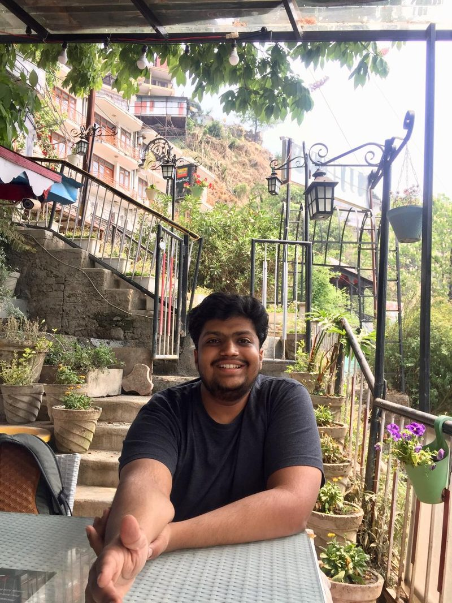
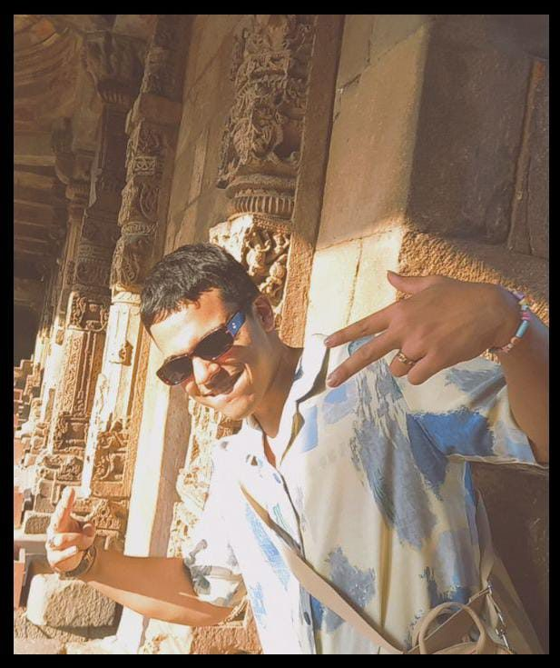
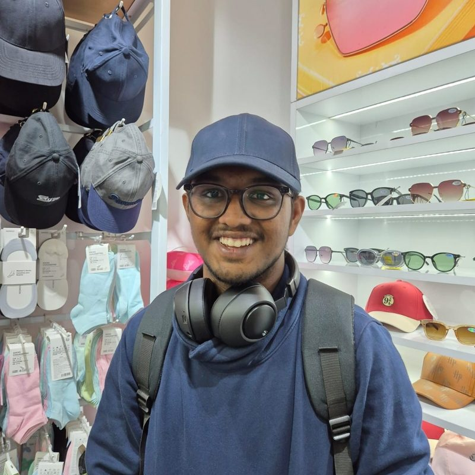

Vatsal Jindel
Founder. Loves big questions and conversations that go off-track in the best possible way — and somehow still ends up fixing the wifi, chasing the invoices and finishing the slides five minutes before every event.
About
Soch brings together students, graduates, researchers and practitioners committed to justice, inquiry and meaningful public work.
Our Story
Soch Foundation is an independent public trust founded by a group of law students who believed that rigorous thought and real-world impact are inseparable.
We foster critical discourse, drive policy research and deliver legal empowerment to communities that need it most.
Today, Soch is expanding beyond its founding institution to other premier law schools and universities.
Team

Founder. Loves big questions and conversations that go off-track in the best possible way — and somehow still ends up fixing the wifi, chasing the invoices and finishing the slides five minutes before every event.
Interested in legal policy, research and access to justice.
Creative backbone of Soch, interested in feminist legal perspectives and access to justice.
The logistical backbone, helping turn ideas into events that actually happen.
Chess, cinema, law and food; passionate about litigation and policy research.

Passionate about economic theory, highways, music and literature.
Go-to for anything tech and everything nice.

Supports tech, drafting and the practical work that keeps Soch moving.